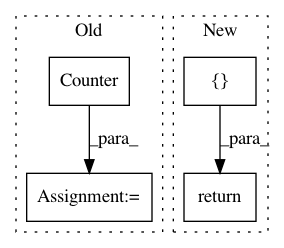

031a862a68853167c1be5aa971563f6069fd6d4d,nltk/translate/gleu_score.py,,sentence_gleu,#Any#Any#Any#Any#,16
Before Change
// For each order of ngram, calculate the no. of ngram matches and
// keep track of no. of ngram in references.
ref_ngrams = Counter(everygrams(reference, min_len, max_len))
hyp_ngrams = Counter(everygrams(hypothesis, min_len, max_len))
overlap_ngrams = ref_ngrams & hyp_ngrams
tp = sum(overlap_ngrams.values()) // True positives.
tpfp = sum(hyp_ngrams.values()) // True positives + False positives.
tpfn = sum(ref_ngrams.values()) // True positives + False negatives.
After Change
if not references or isinstance(references[0], string_types):
references = [references]
return corpus_gleu(
[references],
[hypothesis],
min_len=min_len,
max_len=max_len
)
def corpus_gleu(list_of_references, hypotheses, min_len=1, max_len=4):
Calculate a single corpus-level GLEU score (aka. system-level GLEU) for all
In pattern: SUPERPATTERN
Frequency: 4
Non-data size: 4
Instances
Project Name: nltk/nltk
Commit Name: 031a862a68853167c1be5aa971563f6069fd6d4d
Time: 2017-04-13
Author: goodman.m.w@gmail.com
File Name: nltk/translate/gleu_score.py
Class Name:
Method Name: sentence_gleu
Project Name: PacktPublishing/Deep-Reinforcement-Learning-Hands-On
Commit Name: f287a04243fb8cbe966161c106dce14fac274a6c
Time: 2018-01-06
Author: max.lapan@gmail.com
File Name: ch12/libbots/utils.py
Class Name:
Method Name: calc_bleu
Project Name: anttttti/Wordbatch
Commit Name: 01012a68134f36742d76e615005361e6eb55980a
Time: 2019-06-08
Author: antti.puurula@yahoo.com
File Name: wordbatch/transformers/dictionary.py
Class Name:
Method Name: batch_get_dfs
Project Name: anttttti/Wordbatch
Commit Name: 01012a68134f36742d76e615005361e6eb55980a
Time: 2019-06-08
Author: antti.puurula@yahoo.com
File Name: wordbatch/transformers/tokenizer.py
Class Name:
Method Name: batch_get_dfs